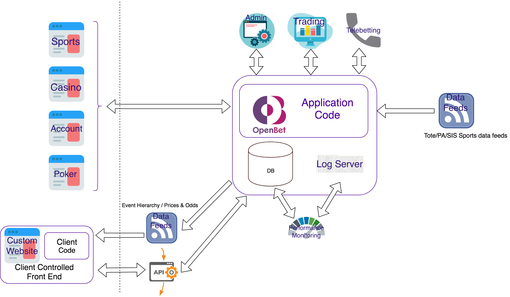
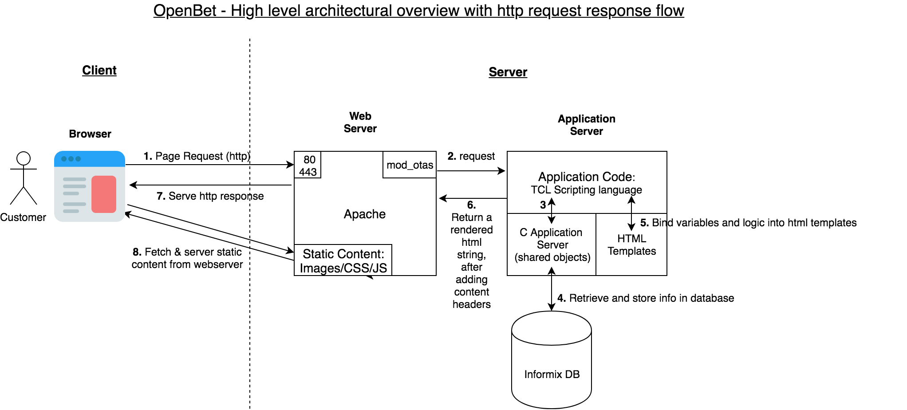

Seán Mulcahy BlogSome ramblings
Making Culture Change
How do you make culture and attitude change at a deptartment level?
A few years ago we started this proces in the department I was in. It was an old school menatality department with more of a waterfall non agile mindset by the people running it and also from the developers on the ground. Releases were 'Big Bang' project releases every quarter (at best), which had major months long test phases running up to them. Small but important changes or simple bug fixes got held up and had to wait on the release train. A lot of the time these changes not only didn't make it into the next release but the release after that, as code wasd locked down for this rigourous manually testing phase. Even still most releases had serious bugs in them. Multiple major branches had to be maintained and merging was big ordeal becayuse of all this causing more bugs as this happend after all the testing on the project branch.
Work was siloed and the development teams only cared about the project they were working on. A dedicated support team managed support of the production system. The did lots of fire fighting and quenched lots of fires. It was a bit of a hero mentatlity. Because of the silo the development team weren't involved in investigating root cause for these production issues, most of them didn't even have access to producion. Becuase of this environment developers never learned from these prod incidents and instead of engineering an applicaiton to avoid pitfalls learned from previous epxeriences or issues the same basic issues cropped up over and over again. A simple example of this was that data changes would constantly be applied on produciton rather than fixing
- siloed work between dev and support
- support heros quenching fires rather than the teams building the apps stopping the fires hanppening in the first place
- no real agile culture, monolith application
- lots of contracts v permies, people who have seen people try to make change/transform change before and failed and are resistant
- use some projects as example projects to show how changes can be releases faster
resistance to change - get a key group to drive the change and identify people within the teams who will help to get the teams to adopt the changes.
Results: Teams assigned ownershuip of applicaitons. Takes time, long game
Kind of similar process to defining Department Values. For buy-in you’d need a lot of people to buy into it and a good way to do that is to involve them in coming up with a process like below. As discussed probably a cross over between some of the below themes and some of the people survey initiatives going on currently.
Managed to find the old confluence pages for this. The 2 main ones being: http://confluence.bse.intranet.sky:8090/display/WW/Software+Principles which was mainly defined by the Tech people
and http://confluence.bse.intranet.sky:8090/display/WW/Continuous+Improvement with the sub-pages for the following themes:
- People
- Curate - Build the right thing
- Deliver - Build it effectively
- Code - Build the thing right
- Test
- Deploy
Here’s an example of the people one:
People
We attract the best people and keep them highly engaged and motivated in a challenging and fun environment Beyond "Basic job titles" -> Job families & core competencies What is job families and core competencies? Creating a clear & consistent career progression path, to encourage personal development at Sky. Identifying a framework for people to work against to develop their skills. Beyond "Generic training courses" -> Knowledge improvement What is knowledge improvement? Increasing the team's knowledge of industry tools, methods and trends, as well as Sky & department-specific information. the better informed our people are, the better the choices they can make. Beyond "Reactive resourcing" -> Building stable capability Beyond "Reviewing CVs" -> Identifying talent Beyond "Onboarding" -> A Warm WelcomeFrom there we listed ‘What are we doing now?’ and then ‘Next Steps’ to create specific tasks to help progress towards achieving these goals.
So lots of this material won’t be relevant to the current department as believe it or not we are more progressive !
You may not have access to these old confluence pages so I have added PDFs of them.
Questions
S.M.A.R.T.
Star technique for answering interview questions (situation, task, action, and result.) what-is-the-star-interview-response-technique
Teamwork: About you - Tell us about yourself
See preivous intro/about me paragraph
Teamwork: What are you looking for in a new role ?
- Leading a Team
- Progressing Team Members
- Good Engineering
- Building, delivering & supporting a product that the team can be proud of
- Joining a tcompany/team that has been given clear direction/goals
Teamwork: Why are you interested in working at Teamwork.com?
- Good Culture
- Building interesting products
- People seem to care about the company
- People are proud in what they do and what they deliver
- Happy employees
- Want to contribute to that
* Teamwork: Please outline at least 2 recommendations/improvements/ideas for our products *
Teamwork: What has been your most challenging experience in a past role? *
- Atlantic Lottery
- People: Bhaavna/Will Berrard/Anamika/Tom
- Gonzales Team low morale turnaround
- Sky Store
Teamwork: Where did you hear about Teamwork.com?
- Examiner/Echo article
- Top 10 up and comming tech companies in ireland
- Looked up the website
- Folllowed on Social media
- Culture
- Products
- Tech & Engineering
- Impressed about how proud and happy employees seem to be working for teamwork.com
Monzo: What would you be excited to do at XXX?
- get to know team/people
- understand the product
- understand ways of working
- lead a team to have ownership of app/product from analysis to delivery to support
- contribute to the company
Monzo: Tell us about a complicated interpersonal situation at work and how you resolved it *
- Anamika
- Will B
- Bhaanva
- Tom
- Gonzales Team morale
- Marius v Syed - pairing issues - had to be confronted
- Sandy and BA @ Coral
- Paul v Thyago - Tension within the team for a sprint or 2, held a blood letting meeting which was uncomfortable but it was much better afterwards
Monzo: Tell us about a time you managed an underperforming team member, what happened, what did you do? *
- Anamika
- Will B
- Bhaanva
- Tom
- Give people a chance to improve - put the ball in their court
- explain where they are at and what they need to do
- Set them achievable goals and monitor them against that
Monzo: How would you describe your people management style? *
- Supportive
- Empowering
- Give Direction
- Empathetic
- Emotional Inteligence
- Technical understanding
- Relaxed
- Motivate people in diff ways
- Lead by example
- Balancing people v delivery v engineering
Monzo: How many engineers do you currently line manage? *
- 8 currently, cross functional team - Devs, BA (TDD, Dev, DevOps, Support)
- 40 in a previous role - manage managers, 3 teams in 3 diff sites - London - Athens - Romania
What are my faults
- Confidence in my own abilities
- Ability to speak off the cuff (politician)
- Ability to sell myself/speak about myself
- Perfectionist
- Delegating - was a learnign curve to hand off responsibilities when first became a manager
- not confronting people about issues early enough, stitich in time, reason was about giving people the benefit of the doubt
What’s your biggest achievement
- Atlantic Lottery
- Foreign country
- Client office<
- Remote office
- Coral
- Big OpenBet client
- Big team, including offshore
- offshore
- turning Gonzales team around
- improving BSS ways of working
What are you most proud of
- Project: Atlantic Lottery
- People: Progressing tam members careers (see section on this)
What has been your biggest challenge
- Atlantic Lottery
- Large Coral team
- People MGMT - Bhaavna/Will B/Tom
- Unhappy Gonzales team
- Moving into MGMT initially
What are you views on Agile?
- Lean
- pragmatic
- not wedded to Scrum/Kanban
- Empowering the team
- Clear direction/goals
- Inspect and Adjust
- MVP & iterate
- TDD
- 3 Amigos
- Owning the app/product (including prod support)
- Cross functional team
- Depends on attitude of company/mgmt/other teams to being agile
Agile v Waterfall
Diff OpenBet v Sky
Tell us about your previous work experience
- OpenBet
- SKY
What are your strengths?
What’s my USP? Sell this in a minute long pitch
See intro - add to this?
Further questions
What interests you about this position?
What automated-build tools or processes have you used?
- CI/CD (delivery)/CD (deployment)
- Jenkins
What development tools have you used?
- Basic Editors (Vi, Textpad, Atom, Sublime)
- JIRA
- Confluence
- CVS for source control (now GIT)
- Terminal for command line access to DB
- Unix cmds & bash scripts for Servers, logs etc.
- Jenkins
- K8
- Docker
What languages have you programmed in?
- TCL
- Java (little bit)
- HTML
- JS
- CSS
- SQL
- Unix
- Bash scripts
- Apache
What technical websites do you follow?
- Pluralsight
- Twitter poeple
- Tech radar from thoughtworks?
Describe a time when you were able to improve upon the design that was originally suggested.
Describe the most innovative change that you have initiated and what you did to implement this change.
Given this problem (problem is based upon job requirements), what solution would you provide? Explain your thought process.
How do you handle multiple deadlines?
- Understanding prioritues
- Getting stakeholders in same room if possible, let them decide priorities between each other and have that fight rather than you having to make these decisions
- Good Comms - don't leave people in the dark, keep them aware of issues and possible solution
- Beforehand - identify biggest risks/unkonwns and address those first
- Break the big bolder down to pebbles
How do you keep current on this industry?
- Sky Tech Conf
- QConn
- Pluralsight
- Youtube
How do you troubleshoot IT issues?
- Understand the sytem/architecture flow
- Good Logging (ids, timestamps)
- Browser Errors (dev tools)
- App logs, Web Server logs
- DB tracing & Query plans
- Performace v Functional
Tell me about the most recent project you worked on. What were your responsibilities?
Tell me about the project you are most proud of, and what your contribution was.
- Atlantic Lottery
Give an example of where you have applied your technical knowledge in a practical way.
What challenges do you think you might expect in this job if you were hired?
What elements are necessary for a successful team and why?
What does sky do?
- Satellite TV
- Linear & VOD
- Streaming and Catchup TV
- Adsmart (targetted ads)
- CP (Cont Curation, Prep & Processing)
- Diff Bit rates - SD,720,1080
- Device specific - Apple, Andriod, TVs, Mobile etc
- DRM encryption
- CSC - CSP
- CD (Cont Disc)
- 3rd party Integrations
- Prog Downloads, Chunked Adaptive (bit rates) Streaming
OpenBet
OpenBet products and applications
OpenBet architecture & http request/response flow
Corel Team
Atlantic Lottery
Gonzales Team turn around
- Low Morale
- Too Much Support
- Not enough new engineering/development
- Architects Silo - handed off projects late in the decision making process/li>
- Support Rota & Jira process
- Support Tool created
- Weekly Architects meetings to discuss
What is Agile?
- Lean
- pragmatic
- not wedded to Scrum/Kanban
- Empowering the team
- Clear direction/goals
- Inspect and Adjust
5 Teamwork.com Products
People - Tom
- Disgruntled
- Has Talent
- Didn't get on with prev manager
- coasting
- Leading the team now technically
- Senior Dev
People - Bhaanva
- Communication Issues
- Too Verbose
- Overbearing
- Patience
- Time to breath
- Passionate
- Cares about delivery
People Career Progression
Managers:
- Bhaavna - SM
- Leon - SM
- Aasim - SM
- Stefanos - TL
- Panos - TL
- Alex - TL
- Tom
- Michael
- Ash
- Jazib
- Harry
- Kavita
- Don't treat everyone liek the old saying 'as you would like to be treated'
- Diff people are motivated differently
- guide the managers
- get them to trust and to delegate
- get them to worry about people's careers
Becoming Stale Technolgywise
OpenBet did some pretty cool stuff but a big drawback was the company stuck with the same tools it always used and very rarely adopted some new technologies being used.
We kept reinventing the wheel when we could have used off the shelf open source products that had already been built and had solved the common problems and already overcome all the teething issues that arose with building something from scratch. Some examples would be:
These are just some of the examples. It led to the company losing its ground as the market leader and projects taking longer to develop than they could have. But for the developers in the company it meant that nothing new from a technology standpoint was learned. Because we were a ‘Time & Materials’ company we didn’t get given the time for experimentation/learning/R&D and had to focus on billable hours. People got bored of doing the same thing over and over. Some people left, some people move into more managerial positions (like me). But on the whole people didn’t progress their breadth of technology tools while there. Having moved to Sky where there is much more diverse
Overwhelmed Technically
There are so many frameworks/languages/frameworks/tools to use now. As well as this there were so many things I had in my head I wanted to do. Just some of the ideas:
But where to start? Which frameworks to pick? Angular v React for example. I had so much to learn. Where would I find time to do any of this in between having a family with 3 kids, work and planning our return back to Ireland. To be honest it became a bit overwhelming and i got stuck in a state of stagnation and not doing anything at all.
Eventually I got a grip of myself and decided to approach it like I approach large projects or difficult tasks at work. Don’t try to eat the elephant all at once, do it one bite at a time. So i decided to set some basic goals and iterate from there. Rather than jumping straight into a Javascript framework and hooking it up to a DB, let’s start with building a static website. Doing this will help get back into simple HTML, CSS and some JS as well as getting used to GIT as version control (I used CVS). Once that is done we can expand into something more elaborate.
Semantic UI
Today I discovered Semantic UI. It’s exactly the type of thing I had been looking for. A nice boot strapped CSS with a simple consistent and clean look and feel to it out of the box.
Importantly it has really good documentation with sample usage. To start off you simply need to include the relevant semantic CSS and JS files into your page. There is some JQuery code you can use as well to bring the CSS attributes to life via JS to show how to use them.
A 60 min intro tutorial on YouTube
To run you’d need to:
In the demo he sourced versions of these files from cloud CDNs and then later he built the compiled code later to create the local files.
Once you install semantic, then you can overwrite the default themes if you wish for certain attributes.
Visualising Software Architecture

A few of us attended a course on ‘The Art of Visualising Software Architecture’ which was run by Simon Brown.
The main points we learnt was about visualising the architecture of a system by:
- not trying to fit everything on the one diagram!
- use of a consistent style/standard to be used in the diagrams
- use different levels to drill into the right amount of detail - a bit like google maps
A lot of this is common sense but we don't end up doing it!
The C4 Model:
Uses 4 levels

Good examples of the first 3 levels were in the example Simon provided for one of his old now defunct websites (techtribed.je):
System context

Containers

Components
Drill down to one of those containers - Content updater

Exercise
Before:
Before we learned how to do it properly we split into groups and made an attempt to come up with diagrams of a system. In our case we focussed on the ADI Builder as part of Messenger.


After:
After learning some tips about the C4 model:


Results/Conclusions:
The results were much better! We took an action to create C4 diagrams for applications within the department. We ended up with consistent diagrams that everyone could understand and reason about. We then used these diagrams to illustrate proposed architectural changes through projects or rework. It proved extremely useful for example in refactoring some of the applications, helping us decide how to separate & group things more logically.
Info & references:
- Cliff Notes
- c4model.com
- The course content is based on the freely available book - leanpub.com/visualising-software-architecture